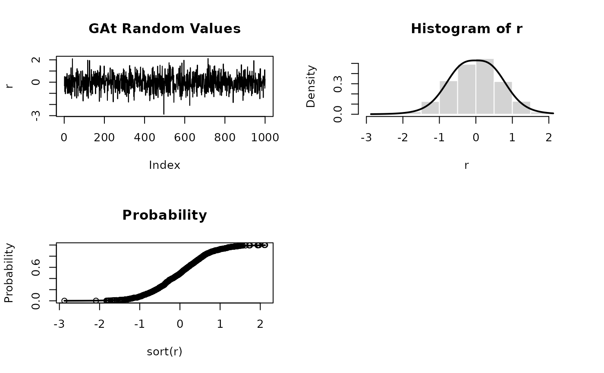

Functions to compute the density, distribution function, quantile function, and to generate random variates for the Generalized Asymmetric t (GAT) distribution.
Usage
dgat(x, mean = 0, sd = 1, nu = 2, d = 3, xi = 1, log = FALSE)
pgat(q, mean = 0, sd = 1, nu = 2, d = 3, xi = 1)
qgat(p, mean = 0, sd = 1, nu = 2, d = 3, xi = 1)
rgat(n, mean = 0, sd = 1, nu = 2, d = 3, xi = 1)Arguments
- x
Numeric vector of values for calculating density.
- mean
Location parameter.
- sd
Scale parameter (must be > 0).
- nu
Tail (shape) parameter (must be > 0).
- d
Second shape parameter (must be > 0).
- xi
Asymmetry parameter (must be > 0; \(\xi = 1\) gives symmetry).
- log
Logical; if
TRUE, densities are returned on the log scale.- q
Numeric vector of quantiles.
- p
Numeric vector of probabilities.
- n
Number of observations for random generation.
Value
- dgat
density values
- pgat
distribution function values
- qgat
quantile function values
- rgat
random variates
Details
This distribution corresponds to the t3 distribution described in
Paolella (1997) and Mittnik and Paolella (2000). The GAT family includes
the Student's t, Laplace, Cauchy, and normal distributions as special cases.
In particular, as \(\nu \to \infty\) the distribution approaches normality.
References
Mittnik, S., Paolella, M. S. (2000). Prediction of Financial Downside-Risk with Heavy-Tailed Conditional Distributions.
Paolella, M. (1997). Tail Estimation and Conditional Modeling of Heteroskedastic Time-Series. PhD Thesis, Institute of Statistics and Econometrics, Christian Albrechts University of Kiel.
Bertocchi, M., Giacometti, R., Ortobelli, S., & Rachev, S. T. (2005). The impact of different distributional hypothesis on returns in asset allocation. Finance Letters, 3(1), 17-27.
Examples
par(mfrow = c(2, 2))
set.seed(1000)
r <- rgat(n = 1000)
plot(r, type = "l", main = "GAt Random Values")
hist(r, probability = TRUE, border = "white")
x <- seq(min(r), max(r), length = 201)
lines(x, dgat(x), lwd = 2)
plot(sort(r), (1:1000)/1000, main = "Probability", ylab = "Probability")
lines(x, pgat(x), lwd = 2)
round(qgat(pgat(q = seq(-10, 10, by = 0.5))), 6)
#> [1] -10.0 -9.5 -9.0 -8.5 -8.0 -7.5 -7.0 -6.5 -6.0 -5.5 -5.0 -4.5
#> [13] -4.0 -3.5 -3.0 -2.5 -2.0 -1.5 -1.0 -0.5 0.0 0.5 1.0 1.5
#> [25] 2.0 2.5 3.0 3.5 4.0 4.5 5.0 5.5 6.0 6.5 7.0 7.5
#> [37] 8.0 8.5 9.0 9.5 10.0
